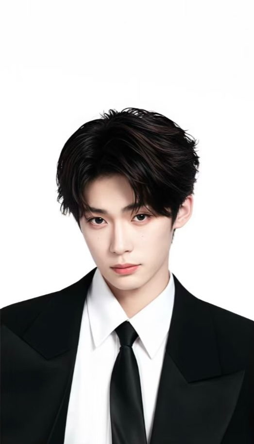

ROLE 01 · 田栩宁 饰
池骋
京城第一炮 · 风流公子哥
养着一条叫「小醋包」的蛇，把漫不经心穿在身上，直到有人真的惹到他心里。
01 / FLYING BIRD
昵称：⚡️ 老雷子 原名：田雷
🐶 家里的小狗 辛巴

02 / FISH IN THE DEEP
昵称：🌙 小鱼 / 月月 / 朋朋 / 朋哥 本名：郑朋
🐱 豹猫哥哥 大鱼 · 🐱 阿比弟弟 小十一
02 / LIVE ARCHIVE
巡演主题曲《深海漫游指南》；更多站次待官宣，后续可在此继续补充。
SWEET CORN · 黄绿渐变的夏天
SWEET CORN / EST. 2025
甜玉米这三个字，是要拆开来看的：甜，取田栩宁的「田」； 玉，取梓渝的「渝」；米，是 me —— 也就是每一个我们。 合起来就是：田栩宁、梓渝，和我，一家三口，一直在一起。
所以甜玉米从来不只是一个 CP 名，它把我们也写了进去。 我们不说太多漂亮话，只是把喜欢做成看得见的东西： 一片黄绿色的海，一次整齐的应援，一段被反复看了很多遍的剪辑。
而 红色，是甜玉米的战斗色。在需要被听见的时刻， 我们把黄绿收进口袋，把红色举起来。
更多时候，甜玉米管他们叫 爸爸妈妈 —— 这个称呼有点不讲道理， 但喜欢本来就不讲道理。
池骋与吴所畏的故事开始，甜玉米也在这个夏天悄悄长了出来。
从弹幕到超话，从剪辑到线下，我们把喜欢做成了看得见的光。
只要他们还并肩站着，甜玉米就一直在这里，替他们把灯举高一点。
REVENGED LOVE · 2025
REVENGED LOVE
「从情敌博弈，到双向沦陷 ——
这场逆着来的爱，最后顺了心。」
落魄青年吴所畏在生活里处处碰壁，为了报复前女友，他决定去接近她的现任男友池骋。 一场始于算计的靠近，却在一次次交锋里变了味道：一个以为自己在下棋， 一个早就把心放上了桌。
ROLE 01 · 田栩宁 饰
池骋
京城第一炮 · 风流公子哥
养着一条叫「小醋包」的蛇，把漫不经心穿在身上，直到有人真的惹到他心里。
ROLE 02 · 梓渝 饰
吴所畏
穷小子 · 算盘打得最响
被生活按在地上，却偏要翻个身。算盘打得响，心软得更快。
这里是图集区。后续可以把双人同框图、应援现场、手幅设计放进来 —— 点击任意一张查看大图。
影像区已经搭好，点击卡片可以打开播放窗口。把视频链接填进
assets/js/site.js 里的 VIDEOS 配置，就能直接播放。
四个颜色，一套秩序：黄绿并肩，红来说话，金与紫蓝，一人一半。
应援口号 CHANTS
甜玉米应援色
CP FANDOM COLOR
黄绿渐变。玉米地里的阳光，日常应援的主色，也是我们最常用的那一片海。
#F7EA7C → #38C27C
战斗色 · 红
BATTLE COLOR
只在需要被听见的时刻出现。控评、投票、应援口号 —— 红色是我们的音量。
#FF3B3B / #C8141B
栩光金星色
田栩宁 · TIAN XUNING
金、黄、白三色，明亮而向上。像被光擦过的一瞬间，也像他笑起来的样子。
#FFD35C / #FFF3CF
星渝色
梓渝 · ZI YU
幻海紫、梦想蓝、天光白三色渐变，像一片夜里的海，安静却有力量。
紫 / 蓝 / 白
黄绿渐变是底色。手幅、灯牌、场地布置尽量保持在黄绿区间，成片才像一整片玉米地。
红色只在「要说话」的时候出现。别让它变成日常，它才会在该响的时候响。
黄绿做背景，金与紫蓝分列两侧；飞鸟在左，鱼在右，中间留给他们自己。